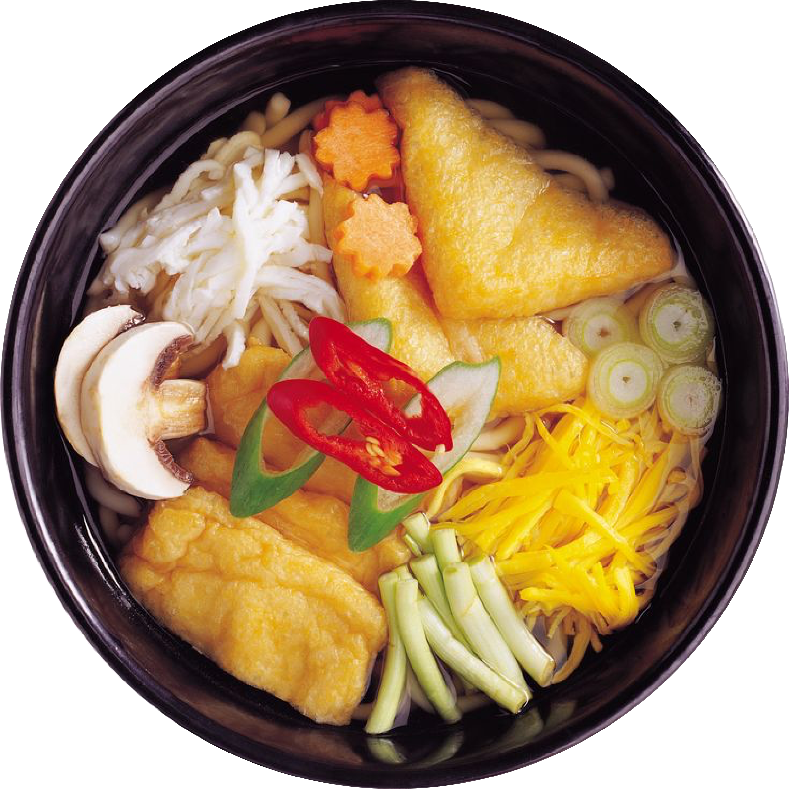
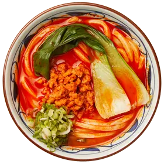
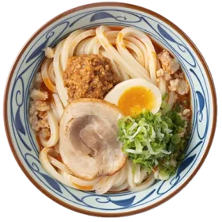
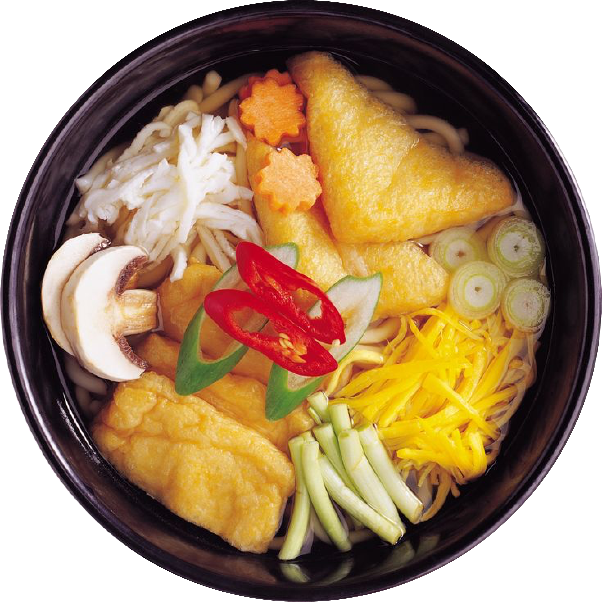
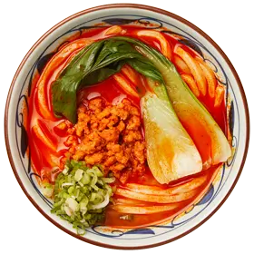
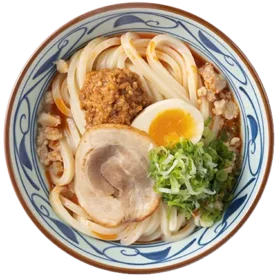

WHERE TRADITION MEETS FLAVOR: UDON MARVELS AWAIT YOU

 





Udon are chewy Japanese noodles made from wheat flour, water, and salt, typically served as a noodle soup in a hot dashi-based broth, but they can also be served cold, with a dipping sauce. They’re thicker than buckwheat soba noodles, typically 2-4 mm, and can be either flat or rounded.
When eating udon, it's common to use chopsticks to lift the noodles. It's also acceptable to make noise (via slurping) while eating in Japanese culture, as it's believed to enhance the flavors and cool down the hot noodles.
The earliest iteration of udon noodles likely originated in China and was introduced to Japan during the
Tang dynasty (618–907 CE). Legend says Kukai, a monk from Kagawa, who went to China as a research scholar
transported udon back to Japan. The original udon may have been closer to a dumpling (flattened round dough)
than a noodle, and in some parts of Japan, udon is still cut into squares rather than the long strands that
became standard by the early fourteenth century.
Traditionally made at home, udon began to be sold in
specialty stalls after the popularity of commercial in the seventeenth century. Today, udon is eaten
throughout Japan but especially in the south, from Osaka to Kyushu.
Most people are already familiar with the thick and square-shaped sanuki udon as it’s the “default” udon served in Japanese restaurants. However, udon exists in a wide variety of forms and shapes, and many regions in Japan have their own spin on things. Here are 5 regional types of udon that are especially popular.